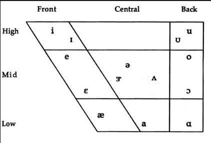

Listen to all these lessons via podcast: podcast name: Alok Pandey learn to speak English fluently.
The precise way to pronounce any English words-all methods is discussed here.
“How to pronounce correctly”. It has become a myth for many English learners. Once we compose ourselves to speak English fluently. The next stage comes to speak English effectively. Because the word effective has various meanings. Thus, it keeps us in dark. Likewise, we can see a lot of articles and questions. How to speak Egnlish effectively. How to improve accent?

Step one to How to pronounce correctly.
So, the first step is to learn phonetics. Because it is a base element to effective English communication. There are 26 letters as per our alphabet. But in English, it has 44 letters. 24 letters are consonant (in the consonant, some are voiced and some non voiced), while 20 vowels. It seems weird as we have 26 consonants and 5 vowels. Follow this link to learn the phonetic sound.
Step two-practice vowel sounds to pronounce correctly.
How to pronounce correctly, vowel plays a vital role. There is no English word comprised without vowel letters. (There are 3 letters but is exceptional). Meaning, all English words must have a vowel letter. Hence the practice of vowel sounds becomes significant. How to position your tongue. When pronouncing a letter or phonetic. Follow this link to understand the vowel letter chart. That basically shows the position of your tongue, while saying a specific letter.
Step three- know the syllables.
So the group of phonetic letters comprises the Syllable. It depends on the length of the word. More letter words have more syllables and vice versa. To understand it better here I have made some graphs. That shows the sequence of a final word-formation.
Because here the word “technology“. It has nine phonetics and four syllables. And finally, the word takes real shape.